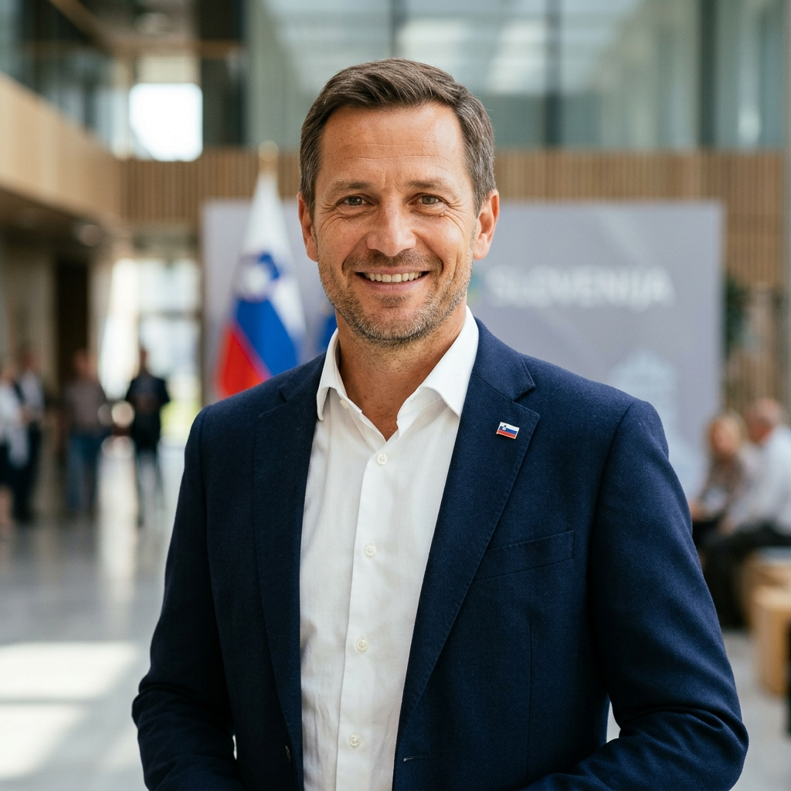

Kandidat za Župana in Nosilec Liste
Matej Slapar
"Kamnik nosim v srcu. Verjamem v razvoj, varnost in povezovanje vseh prebivalcev naše čudovite občine."
Matej Slapar je izkušen voditelj z jasno vizijo za občino Kamnik. Z znanjem, predanostjo in nenehnim delom na terenu je dokazal, da zna povezati skupnost in realizirati ključne projekte za boljšo prihodnost vseh generacij.